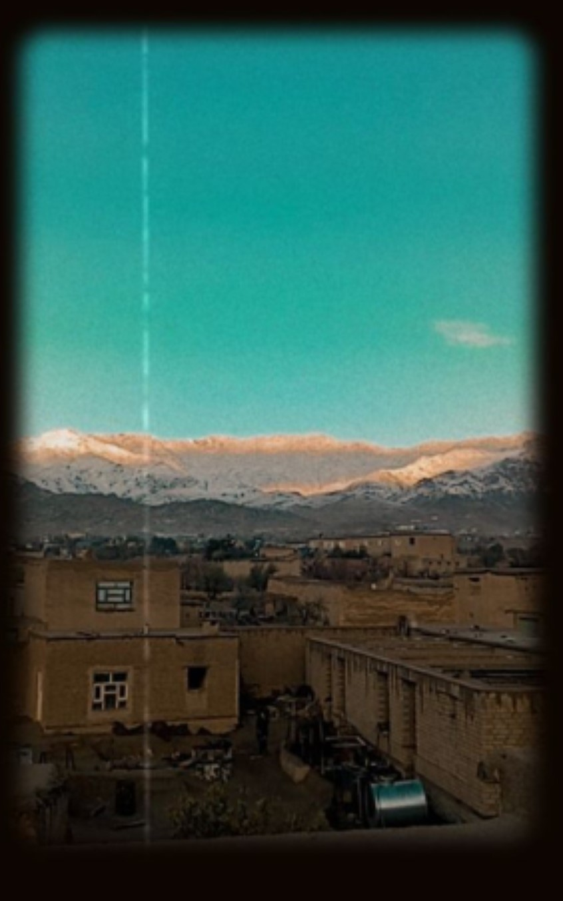
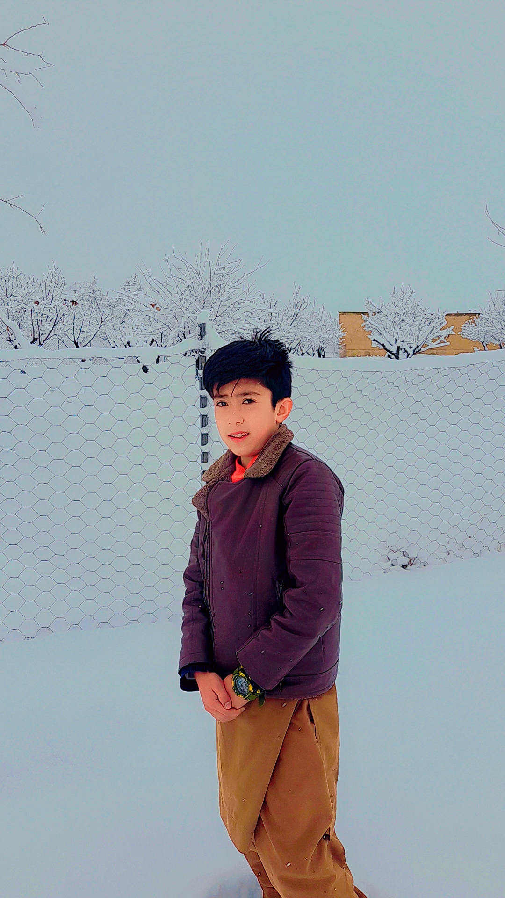
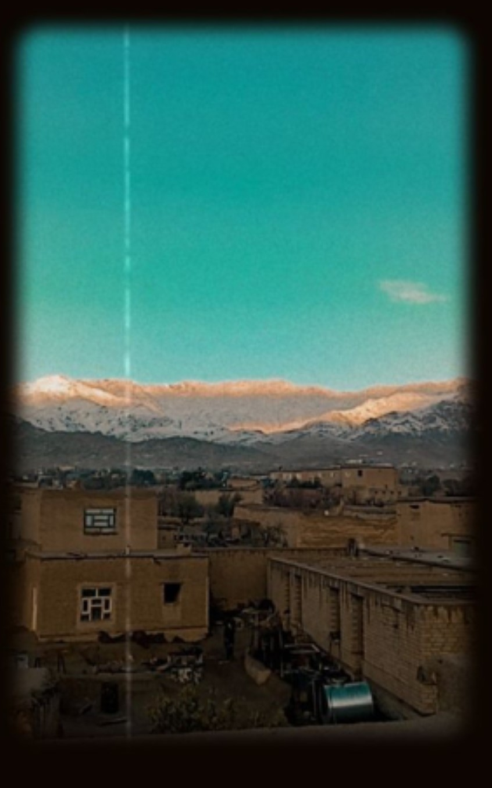
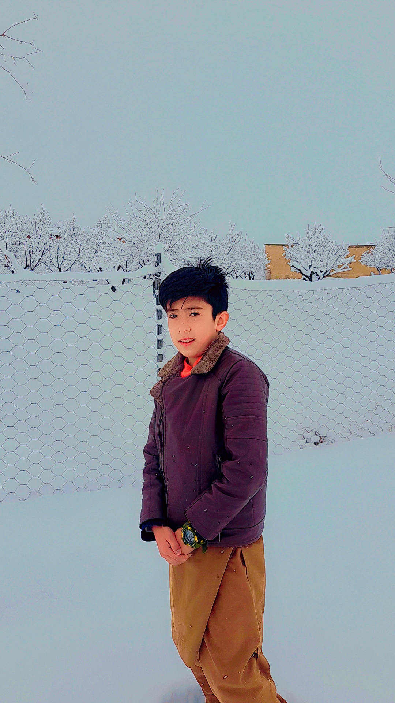
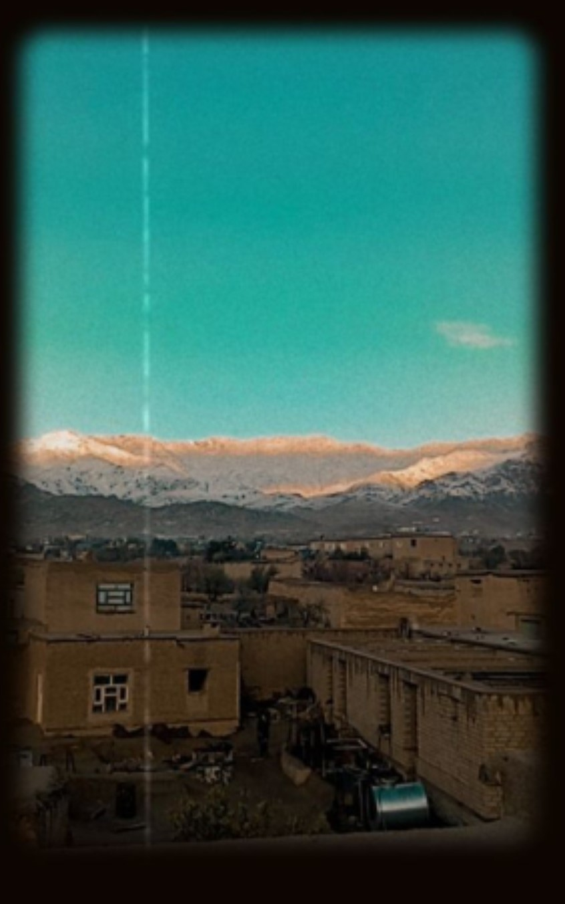
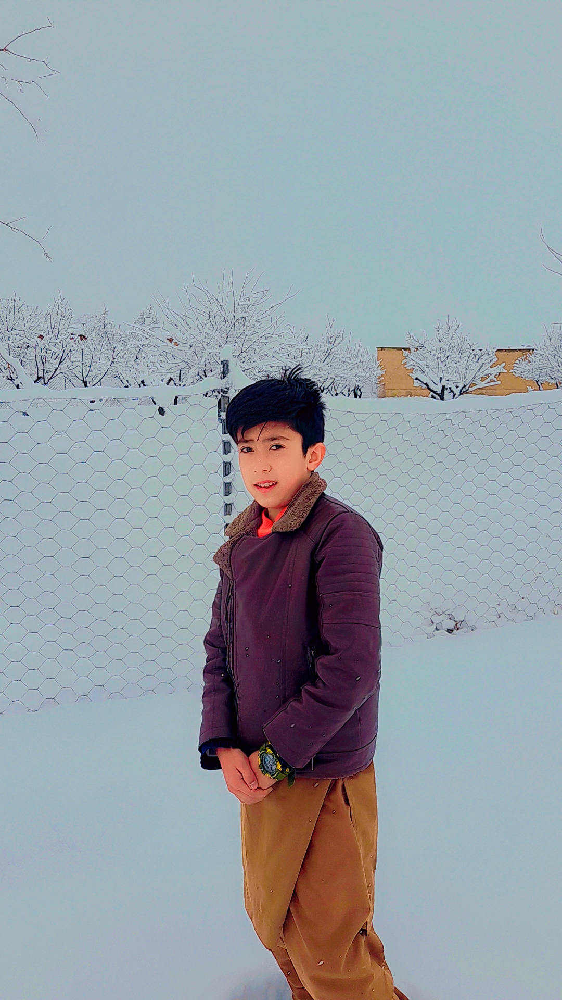
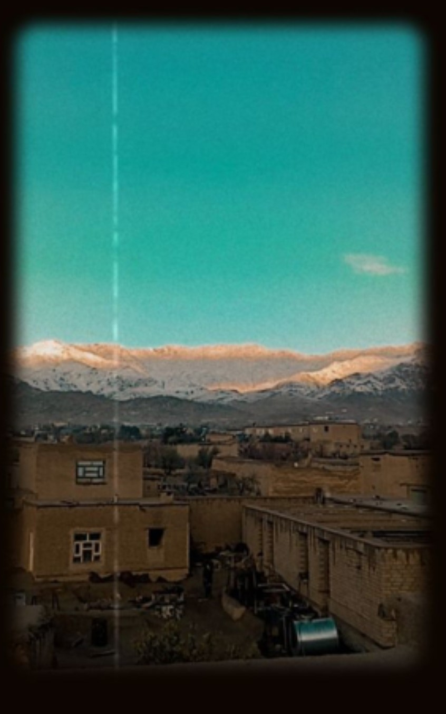
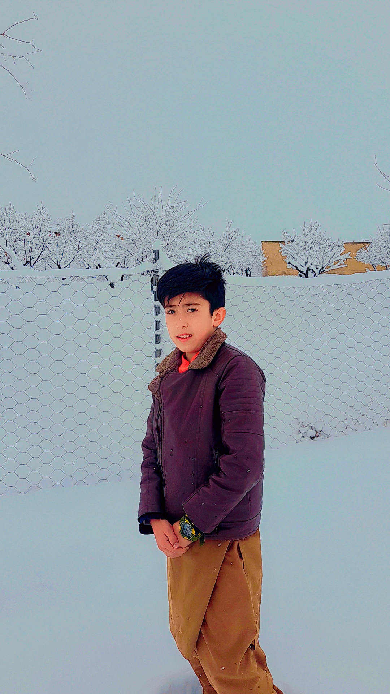

هوای برفی جاغوری،همچون تکه ای از بهشت زمینی است که در دل کوه ها پنهان شده. وقتی که برف نرم سفید بر دمنوش های کوهستان مینشند ، همه جاآرام و ساکت می شود . هوای سرد و تازه اش ، نفس هارا به گونه ای میسازد که انکار همه جیز دوباره زنده میشود . هر دانه برف که به زمین میرسد ، گویی یک قصه ای تازه را روایت میکند . در این سرزمین برفی ،سکوت تنها از صدای قدم های تان در برف شکسته میشود و منظره های زیبا کوه های پوشیده از برف ، همچون تابلو های هنری زهده میدرخشند ، جاغوری در زمستان ، جای است که میتوان در دل زیبایی های بیکران طبیعت غرق شد و لحظاتی پر از آرامش و تجدید روح پیدا کرد هوای برفی جاغوری در زمستان انگار داستانی است که تنها با چشم های خود باید دید . وقتی برف شروع به باریدن میکند ، همه چیز در دنیای سفید و خاموش غرق میشود . کوه ها به مانند نگهبانانی آرام در میان مه و برف ایستاده اند و رود خانه ها در دل برف ، به آرامی به سفرشان ادامه می دهند . در این هوای سرد و برفی ، خانه های ساده و دلنشین جاغوری در کنار یکدیگر همچون یک تصویر از صمیمیت و نزدیکی انسانها به هم هستند . بخاری های چوبی در دل خانه ها روشن است و گرمای شان در دل سرمای بیرون ، امید و زندگی می بخشد . هوای برفی جاغوری حس ویژه ای دارد ، گویی هر لحظه به یادگیری و لمس طبیعت و زندگی می پردازید . در این فضا انسانها با خود و محیط اطرافشان هماهنگ میشوند و در عین سادگی ، زیبای های بی پایانی در برابر چشمهای شان نمایان می شود. :)